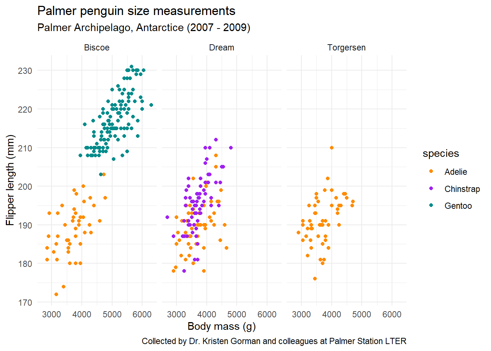

MEGADOC is a place for me to compile a bunch of coding practice from my classes, hopefully in a way that is searchable and useful. This will get refined as I go.
SUMMER
Week One, Day One
functions: self contained pieces of code, which are built to accomplish a specific task. They accept inputs(arguments), and return outputs.
#make a function to help us convert some units ----convert_units <-function(value_g_cm3) { value_kg_ft3 = value_g_cm3 * (1/1000) * (1/3.531e-5)print(value_kg_ft3)}#use that function to convert 50 grams over cm3 to kg over ft3convert_units(50)
[1] 1416.029
Logarithms
Logarithms ask a question. eg: loga(b) asks, to what power do I hae to raise a to get a value of b?
# Euler's number (e) ---exp(1)
[1] 2.718282
# all three result in the same value (e^2) ----exp(2)
[1] 7.389056
exp(1)^2
[1] 7.389056
exp(1)*exp(1)
[1] 7.389056
# "to what power do I have to raise `e` to get a value of `e^10.4`?" ---# recall from lecture slide: https://eds-212-essential-math.github.io/course-materials/slides/day1.2-slides.html#/logarithmslog(exp(1)^10.4)
[1] 10.4
# "to what power do I have to raise 10 to get a value of 100?" ----log10(100)
[1] 2
# "to what power do I have to raise 2 to get a value of 16?" ----logb(x =16, base =2)
[1] 4
Making seqences in R
Making a sequence stored as a vector!!
seq() seq(from = start_value, to = end_value, by = increment)
#for example, create a sequence from 2 to 18 by increments of .3 ----seq(from =2, to =18, by =0.3)
Note that the above sequence ends at 17.9 (the last complete increment). Another option is to specify the length of the output vector instead - like “I want to have 30 values between 2 and 18, evenly spaced.” To do that, use the length = argument within the seq() function.
##The logistic growth function translated to coding language:
pop_logistic <-function(capacity, init_pop, rate, time_yr) { capacity / (1+ ((capacity - init_pop) / init_pop) *exp(-rate * time_yr))}#Let’s say that for a population of chipmunks in one region, the carrying capacity is 2,580 individuals, the exponential growth rate is 0.32 (yr-1), and time is in years. If the initial population is 230 individuals, what is the estimated population size a time = 2.4 years?pop_logistic(capacity =2580, init_pop =230, rate =0.32, time_yr =2.4)
[1] 449.4572
#Now let’s say we want to predict (then plot) the estimated population over a bunch of different times. Based on what we’ve learned today, how do you expect we might do that? A sequence of values as the time input!#Let’s make a sequence of times (0 to 20 years, by 1/2 year increments), then use that vector as our time input in the logistic growth model.# First, create the vector (a sequence of values) ----time_vec <-seq(from =0, to =20, by =0.5)# Then, use that as your time input in the model ----pop_logistic(capacity =2580, init_pop =230, rate =0.32, time_yr = time_vec)
#We want to plot those estimated population sizes - but we didn’t store the vector of outputs! Remember - if you want to store an output, using the assignment operator (<-) in R, and check that it exists in your environment.# assign your model to an object (here, that's called `chipmunk_pop`) ----chipmunk_pop <-pop_logistic(capacity =2580, init_pop =230, rate =0.32, time_yr = time_vec)# Then we can call `chipmunk_pop` ----chipmunk_pop
There are two functions, D() and deriv(), which can be used to compute the derivatives of expressions in R. Both accept two arguments, expr (an expression or formula) and name (the variable that the derivative will be carried out with respect to). We’ll focus primarily on using D(), but examples are provided for using deriv() as well:
#evaluate 5x^2 at x = 2.8# Create an expression (right hand side of the equation) ----my_expression <-expression(5* x^2)# Find the derivative of your expression with respect to x using `D()` ----my_derivative <-D(expr = my_expression, name ="x")# Check it out ----my_derivative
5 * (2 * x)
# Evaluate it at x = 2.8 ----x <-2.8# Evaluate it! (value returned is slope) ----eval(my_derivative)
[1] 28
You don’t have to save your expression as it’s own variable (though it is good practice to break things into smaller, easy-to-read pieces, when possible) – we can write our expression directly inside D() where the first expr argument is expected:
# Find the derivative with respect to x ----my_derivative <-D(expr =expression(3.1* x^4-28* x), name ="x")# Check it out ----my_derivative
3.1 * (4 * x^3) - 28
Another example…
# Create and store your function ----fx <-expression(x^2)# Find the derivative with respect to x (using `D()` function) ----df_dx <-D(expr = fx, name ="x")# Return the derivative ----df_dx
2 * x
# Find the slope at x = 10 ----x <-10eval(df_dx)
[1] 20
Some crazy ass examples:
gz =expression(2*z^3-10.5*z^2+4.1)dg_dz =D(expr = gz, name ="z")# Return dg_dz ----dg_dz
2 * (3 * z^2) - 10.5 * (2 * z)
ty =expression((2*y^3+1)^4-8*y^3)dt_dy =D(expr = ty, name ="y")# Return dt_dy ----dt_dy
#What if we want to find the slope at a range of values, instead of just one?# Create a vector of y values from -0.4 to 2.0, by increments of 0.1 ----y <-seq(from =-0.4, to =2.0, by =0.1)# Evaluate the slope of T(y) at each of those values ----eval(dt_dy)
# load libraries ----library(tidyverse)library(palmerpenguins)# create plot ----ggplot(data = penguins, aes(x = body_mass_g, y = flipper_length_mm)) +geom_point(aes(color = species)) +scale_color_manual(values =c("darkorange","purple","cyan4")) +labs(x ="Body mass (g)",y ="Flipper length (mm)",title ="Palmer penguin size measurements",subtitle ="Palmer Archipelago, Antarctice (2007 - 2009)",caption ="Collected by Dr. Kristen Gorman and colleagues at Palmer Station LTER") +facet_wrap(~island) +theme_minimal()
Warning: Removed 2 rows containing missing values or values outside the scale range
(`geom_point()`).

Interactive Session 2B is all about derivatives in R, plotting derivatives, and partial derivatives. Check class website.
Week one, day 3
This day was all about differential equations and solving them numerically in R.aND, linear algebra.
note: some solutions need an initial condition in order to know absolute amount. Ex: the lemonade stand. Also, that asshole Leslie.
In this unit, we also did derivatives and the Lokta Volterra equation, for predator/prey calculations. And, the deSolve package in R. See Interactive Session 3A on the class website for this for now: I’ll put it here later.
VECTORS are lists of values used to describe different features or variables of interest. Vectors are created in R using the c() function. (c stands for combine or concatenate.)
A data frame is a list of equal length vectors.
#A data frame creation examplefood <-c("banana", "apple", "carrot")meal <-c("breakfast", "snack", "lunch")food_mass_g <-c(14.8, 19.2, 11.5)squirrel_meals <-data.frame(food, meal, food_mass_g) squirrel_meals # Returns the data frame